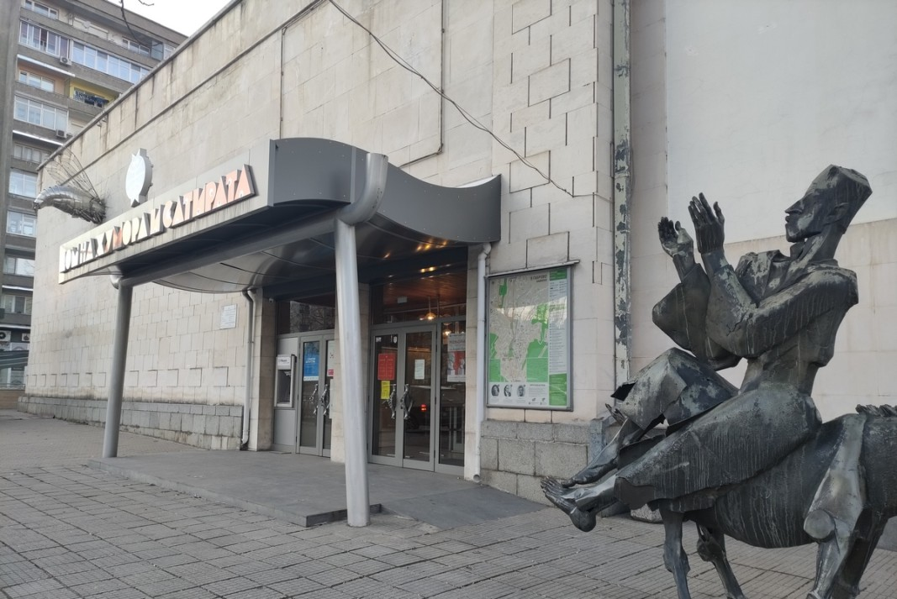

Етър
Уникален комплекс на открито, представящ българските занаяти.

Дом на хумора и сатирата
Емблематичен културен център на града.

Шипка
Исторически паметник и символ на свободата.
Уникален комплекс на открито, представящ българските занаяти.

Емблематичен културен център на града.
Исторически паметник и символ на свободата.